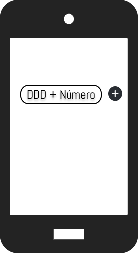

O CPaaS (Plataforma de Comunicação como Serviço) é a solução perfeita para o seu negócio. O serviço
oferece
a estrutura completa para que canais de comunicação como mensagens de texto SMS, chamadas de vídeo e de voz,
e-mail, e outros, estejam integrados de forma fácil nos sistemas das empresas através de APIs que se conectam
à
plataforma Modavo.
Como funciona?
Nossa API permitem que as empresas expandam suas ofertas sem a necessidade de hardware ou software
adicional.
O CPaaS, com sua escalabilidade, flexibilidade, autenticação e segurança aprimoradas, está
revolucionando o modo como as empresas habilitadas em nuvem implementam comunicações de voz, SMS e
vídeo.
Serviços
2FA
Conversor
Número Mascara

Consultar
Gerenciamento de campanha
Utilizações
Logistica
Acesso seguro com 2FA.
Uso de números mascarados para proteção de funcionário e cliente.
Mantenha o cliente informado sobre entrega e serviços .
Varejo
Compra segura com 2FA.
Avisos sobre compras e entregas.
Upsell com novas ofertas e vantagens via SMS.
Call Center
Melhore taxas de abertura utilizando alertas SMS para confirmações.
Economia de números com o uso de um único número máscara por todos os agentes.
Saúde
Acesso seguro com 2FA.
Melhore o agendamento e reduza faltas com lembretes por SMS.
Tokens de autorização para procedimentos com 2FA.
POR QUE A TELECALL?
CONFIANÇA: Empresas que já conhecem e confiam no nosso trabalho AGILIDADE: Aplicativos de rápida implementação para qualquer negócio GARANTIA DE REDE: Rede própria de alta capacidade e controle total ponta a ponta SUPORTE AO CLIENTE: Representantes locais de vendas e suporte PREÇO: Melhor custo benefício para um conjunto completo de serviços
.png)